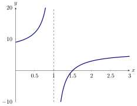
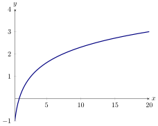

We explore functions that behave like horizontal lines as the input grows without
bound.
Consider the function: 
As approaches infinity, it seems like approaches a specific value. Such a limit is
called a limit at infinity.
If becomes arbitrarily close to a specific value by making sufficiently large, we
write and we say, the
limit at infinity of is .
If becomes arbitrarily close to a specific value by making sufficiently large
and negative, we write and we say, the limit at negative infinity of is
.
Sometimes one must be careful, consider this example.
Compute
In this case we multiply the numerator and denominator
by , which is a positive number as since , is a negative number.
Note, since and we can also apply the Squeeze Theorem when taking limits at
infinity. Here is an example of a limit at infinity that uses the Squeeze Theorem, and
shows that functions can, in fact, cross their horizontal asymptotes.
Compute:
We can bound our function Now write with me
And we also have
Since we conclude by the Squeeze Theorem, .
If then the line is a
horizontal asymptote of .
Give the horizontal asymptotes of
From our previous work, we see that , and upon
further inspection, we see that . Hence the horizontal asymptote of is the line
.
It is a common misconception that a function cannot cross an asymptote. As the
next example shows, a function can cross a horizontal asymptote, and in the example
this occurs an infinite number of times!
Give a horizontal asymptote of
Again from previous work, we see that . Hence is a
horizontal asymptote of .
We conclude with an infinite limit at infinity.
Compute

The function grows very slowly, and seems like it may have a horizontal asymptote,
see the graph above. However, if we consider the definition of the natural log as the
inverse of the exponential function
means that and that is positive.
We see that we may raise to higher and higher values to obtain larger numbers. This
means that is unbounded, and hence .